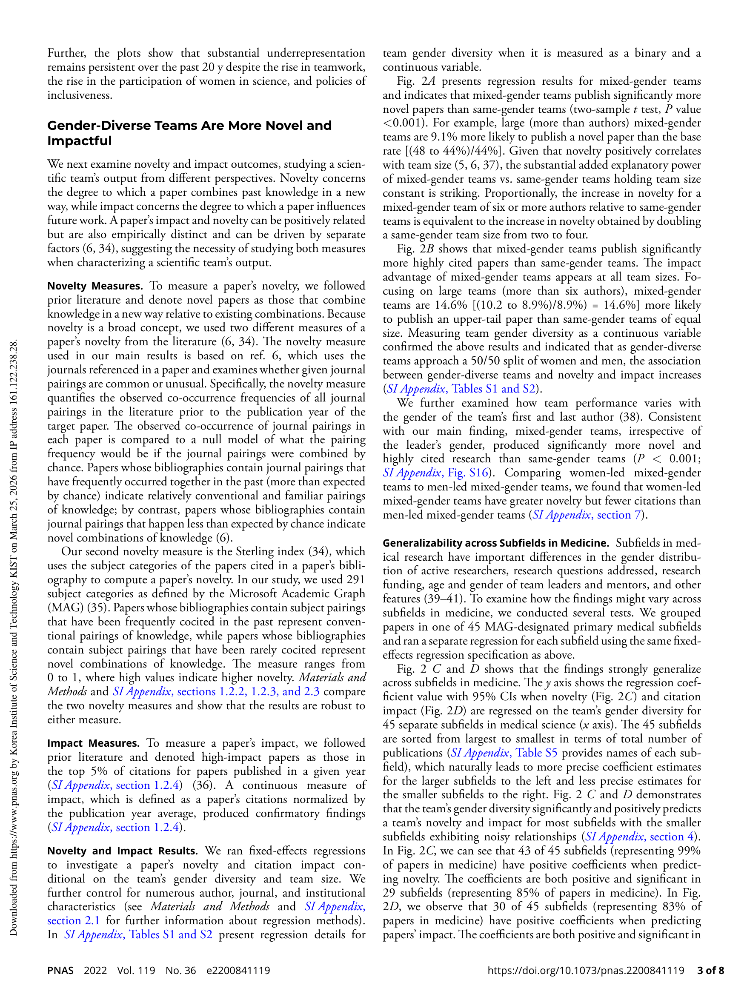
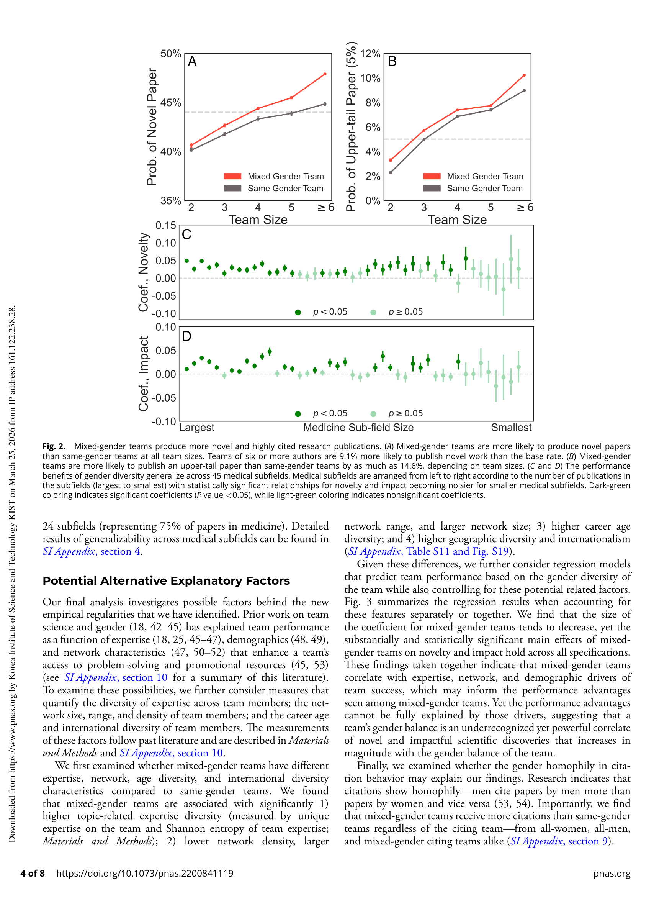

Figure 1
저자: Yang Yang, Tanya Y. Tian, Teresa K. Woodruff, Benjamin F. Jones, Brian Uzzi | 날짜: 2022 | Journal: PNAS | DOI: 10.1073/pnas.2200841119
Figure 1
성별 다양성이 높은 연구팀은 동일 성별 팀보다 최대 9.1% 더 새로운(novel) 논문을, 14.6% 더 높은 피인용 상위 논문을 발표한다. 의학 분야 660만 편 논문 분석 결과, 성별 균형이 50:50에 가까울수록 신규성과 영향력이 모두 증가하며, 이 패턴은 의학 45개 하위 분야에서 거의 보편적으로 관찰된다.

Figure 2

Figure 3
총평: 660만 편 의학 논문을 활용한 대규모 실증 분석으로, 성별 다양성 팀의 신규성·영향력 우위를 설득력 있게 입증한 중요한 연구이나, 관찰 연구의 한계로 인과 메커니즘 규명은 후속 과제로 남아 있다.